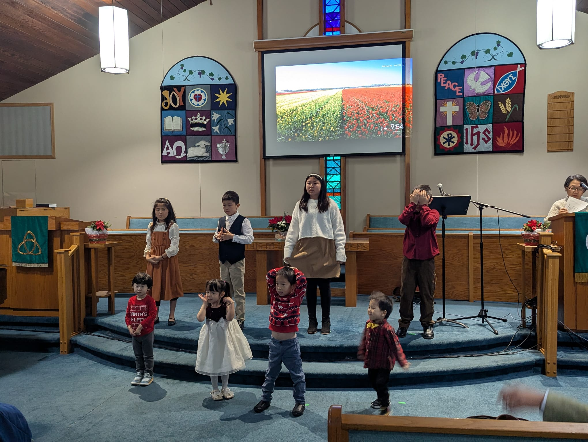
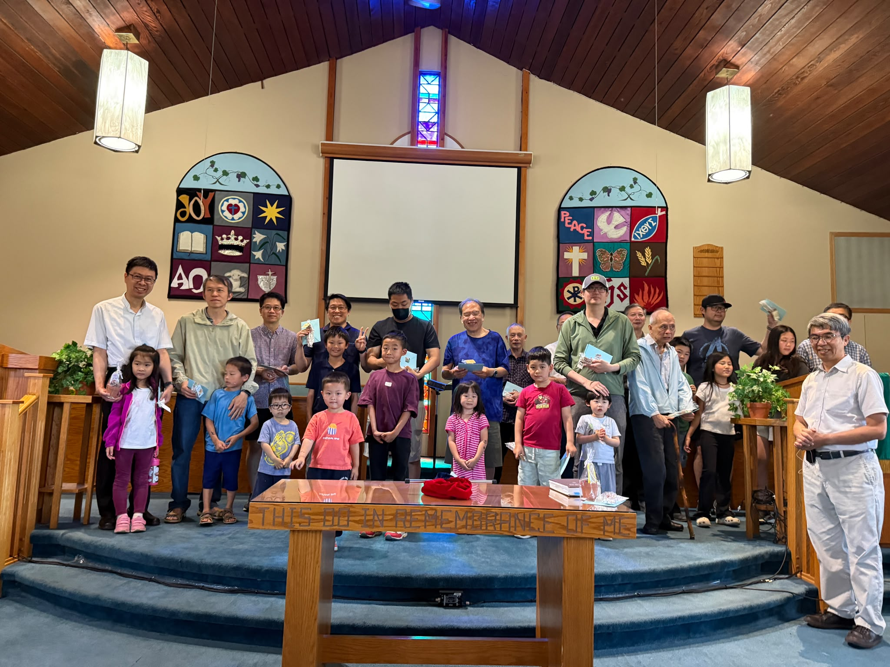

認識我們Who We Are
認識安提阿About Antioch
一個在愛中成長的信仰群體A community growing together in Christ
溫哥華安提阿教會是由中港台來的加拿大華人所組成的基督徒群體。這個大家庭的成員，在上帝眼中個個都是尊貴與獨特的。當我們生活在一起時，會學習去尊重並欣賞這些獨特的個體所帶來的差異與多樣性。
感謝主，人們的獨特性雖多而不同，但基督的福音把我們緊緊的連結在一起，成為完整的身體。因著愛的承載力，教會成為我們的方舟，而在方舟裡，我們成為一個生命共同體——共享上帝所賜永恆的生命。
Vancouver Antioch Church is a Christian community formed by Chinese Canadians from mainland China, Hong Kong, and Taiwan. Each person here is precious and unique in God's eyes. As we live together, we learn to respect and appreciate the diversity each individual brings.
Christ's gospel binds us together into one body. Through the power of love, the church becomes our ark — and within it, we share in the eternal life given by God.



「安提阿」是古代敘利亞的一個大都市。根據聖經使徒行傳第11章19–30節的記載，安提阿教會是早期基督教教會，在以色列以外的地方，首先傳播建立的教會之一。
這個教會也成為使徒保羅個人信仰成長的家，以及外出宣教的大本營。他們重視宣教工作、強調聖經教導，並接受聖靈的恩賜服事。
就是這樣一個模範的教會，成為我們學習效法的對象。溫哥華的安提阿教會，亦希望以向普世華人宣教、重視解經傳道、尊重聖靈的恩賜與工作，作為建立教會最基本的原則。
"Antioch" was a major city in ancient Syria. According to Acts 11:19–30, the Antioch church was one of the earliest Christian communities established outside Jewish Palestine. It was also the spiritual home of the apostle Paul and his missionary base.
The ancient Antioch church emphasised evangelism, diligent Scripture study — even developing the Antiochene School of biblical exegesis — and received the gifts of the Holy Spirit.
This extraordinary example is what we seek to follow. Vancouver's Antioch Church aims to share the gospel with the Chinese world, focus on expository preaching, and respect the work of the Holy Spirit.
我們，安提阿教會，全心全意接受上帝在新舊約聖經中的啟示，並以使徒信經、尼西亞信經和亞他那修信經為信仰的摘要。 We, Antioch Church, accept wholeheartedly the revelation of God in the Scriptures of the Old and New Testaments, summarised in the Apostles', Nicene, and Athanasian Creeds.